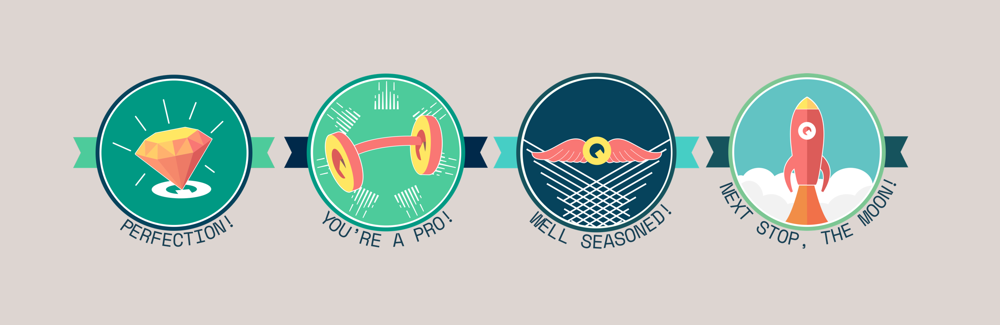

Quodl
University lecturers have very few tools that are specifically designed for the lecture theatre. The client, a senior lecturer in psychology had developed a text service that he used to quiz the students and develop their retrieval practice (the ability to recall facts from memory). There were issues with adoption, however, from students, lecturers, and university administrators.
I designed a simple web app that would allow students to login and instantly find the quiz that was being run live in the lecture while giving the lecturer full control over the pacing of the quizes. The app also featured various kinds of gamification - rewards, scores, and a leaderboard. The UI was fun and made to be unlike anything on the market today, somewhere between a video game and a learning platform.
Some time after its release I was asked to update the UI as part of a commercialisation effort to make the product more palatable to potential investors.

In addition, more work was needed on some of the gamification aspects. I designed a website and achievement badges that a UI designer, whom I instructed, converted in to assets for the web.
I've indirectly created most of the brand for this project.
The app was shortlisted for a Guardian University Award for Teaching Excellence and a lecturer who trialled the app, commented that it was the
“best thing I’ve ever seen in the classroom. Students love it and it is so engaging.”
- from "The online quiz app transforming teaching at City"
The project is in continuous development as Quodl.